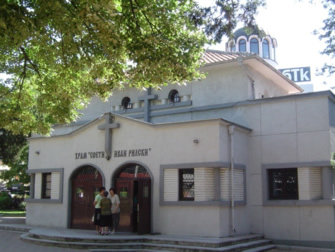
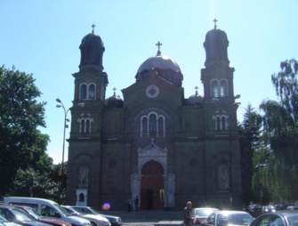

 Изграждането на храма започва с разширението на град Бургас. Главен дарител за строителството на църквата е бургаският благодетел АлександърГеоргиев Коджакафалията, който предоставил земите си в района на днешния комплекс"Братя Миладинови" за ползване от бедни и безимотни жители на града. Комитетът по построяването на храма получава големи парични помощи от Съюза на запасните подофицери, както и от други бургаски църкви и благоверни християни. Новият храм "Св. Иван Рилски" е открит тържествено на 1 април 1934 г. В 1951 г. старата дървена камбанария е заменена с нова, която днес се намира вляво от входа на храма. В камбанарията са окачени четири различни по големина камбани, най-голямата от които тежи 100 кг, втората 60 кг, а другите две са по 40 кг. Иконостасът е изработен още по време на градежа. Той е висок 3 м и дълъг 11,5 м. За изписване на коностасните икони е избран проф. Николай Кожухаров, участващ със седем икони. На 1.11.1973 г. при освещаване на храма в Свeтия престол евложена частица от мощите на Св. Мъченик Вакх.
 Катедралният храм "Св. Св. Кирил и Методий" е строен през 1897 - 1907 г. по планове на италианския архитект Рикардо Тоскани. Храмът е от типа трикорабна базилика. Вътрешността на катедралата се разделя от пет двойки носещи мраморни колони. Главният купол се извисява върху висок дванадесетстенен барабан с прозорци. Върху красивия стъклопис на главния вход на катедралата са изобразени светите братя Кирил и Методий. Уникалните стенописи са дело наизвестните български художници проф. Гюдженов и Кожухаров, стенописвали и църквата"Св. Александър Невски" в София.